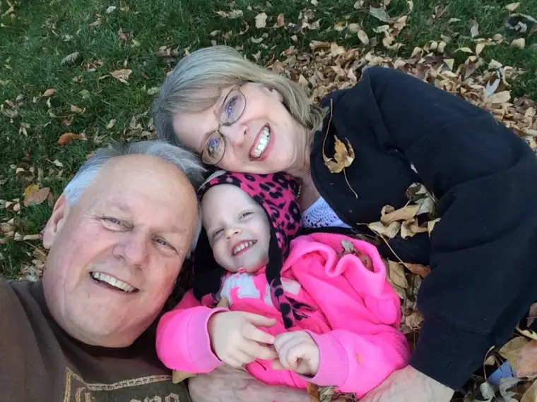
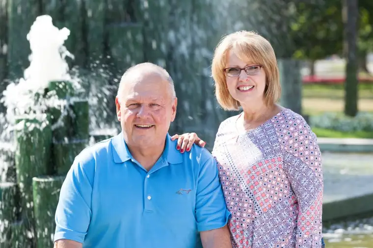

FARGO — He’d just returned from a thrilling elk-hunting trip when Steve Bulat’s world began to turn sideways.
“I was in great shape and felt great,” he says.

But at 63, he knew he needed to keep the annual physical appointment his wife, Ella, then a receptionist at Sanford, had made for him.
“The bloodwork didn’t look right,” he recalls. “They thought it might be ulcers or anemia.”
After some tests at Roger Maris Cancer Center in January 2015, Steve was handed a grave diagnosis — acute myeloid leukemia and an 8-percent survival rate.
“We were supposed to go to Vegas, but (the doctor) said, ‘You’re not going anywhere. This is really aggressive,” he says.
After recovering from shock, Steve and Ella decided to approach the disease with positivity. “The chances weren’t zero,” Steve says. “It was like we were given miraculous strength and determination to beat this.”
The Rev. Troy Simonsen, after conducting an anointing of the sick, told Steve, “I want you to give God a target. Keep making the sign of the cross. That’s Christ’s bullseye to keep blessing you.”
With that image in mind, Steve began a journey of intense chemotherapy, extended hospital stays and talk of a bone-marrow transplant to regenerate new, healthier cells. It would require, however, a willing and perfectly-matched donor.
Steve called his only full brother, August, back in his hometown of Detroit, explaining his need for a donor. Steve says August responded, “That won’t be a problem.”
The transplant would be handled by the University of Minnesota Medical Center in Minneapolis. For several months, the couple stayed either there, or at the American Cancer Society’s Hope Lodge, shuttling back and forth.
“We’d joke with friends, calling it ‘our summer at the lodge,’ ” Ella shares.
Ella had gone through her own cancer journey in 2007 when diagnosed with breast cancer.
Considered a survivor now, she still remembers driving the backroads to Roger Maris for treatment, and how the sun would glisten through the trees of Lindenwood Park. “Seeing those beautiful sunrises every morning, you’d just feel God right there,” she says. “It helped me with a lot of my fear.”
While in Minneapolis, when not in the hospital, the couple attended Mass every Saturday night, at either the Basilica of Saint Mary or Saint Paul Cathedral.
The first time entering the basilica, a chorus of voices “like angels” greeted them, Steve say. It turned out to be college students and one of many “signs” that reminded him of God’s abiding presence.
Some setbacks also came, however. An infection before his transplant sent his temperature soaring to 106 degrees and caused brain swelling, threatening his life and almost ending his chance at the life-saving procedure.
His gall bladder, damaged from drugs, also filled with fluid “like black motor oil” and had to be removed.
And during their time away, the couple’s home flooded, causing $75,000 in damage.
But even that brought blessing, Steve says, noting that insurance covered it all. “We were coming home with a compromised immune system, and they’d checked everything for mold and redid everything, so when we got in, everything was clean,” he says.
When Steve had to quit working, Ella left her job, too, to tend to him. “She’s the nicest person I’ve ever met in my life,” he says. “If you met her mother, you’d know where she got it from.”
Their daughters Amanda and Brianna and family, Steve’s many co-workers and work associates from his former employer, Johnson Controls, and good friends Dale and Gail Zimprich stayed close by during the ordeal.
“The four of us have talked many times about our faith,” Gail says. “We’ve argued about it, laughed about it and wondered, how can you get through something like this without it? … There’s a peace at knowing no matter what happens, it will turn out well.”
Dale’s own father died when he was only six, he says, so cancer “was always an ugly word,” and it was scary to watch his friend face this. “You can see it in people’s eyes, the shock and ‘What if?’ ” he says.

But it was heartening to watch the couple move through it in faith, including Ella’s attentiveness to Steve.
“He has a tremendous wife who supports him, along with family and friends, and he’s not bashful about giving hugs, and praying openly, saying, ‘I’ve got one more day!’ ” Dale says.
The way Steve pulled through it earned Dale’s friend the nickname “The Miracle Man.”
“He’s not done yet,” Dale says. “Steve’s got the most positive attitude of anyone I know.”
Steve, feeling God has allowed his suffering for a greater purpose, now serves as a mentor for others who receive a daunting cancer diagnosis.
He admits it hasn’t always been easy, and early on, the question “Why me?” crossed his mind. But later, it turned to, “Why not me?”
And in a twist on the age-old wonder in hard times, he says now, “I question why the Lord has been so good to me. Why me? I’m not worthy enough and I can’t give enough back. He’s blessed me so much.”
[For the sake of having a repository for my newspaper columns and articles, I reprint them here, with permission, a week after their run date. The preceding ran in The Forum newspaper on Jan. 13, 2018.]